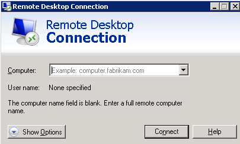
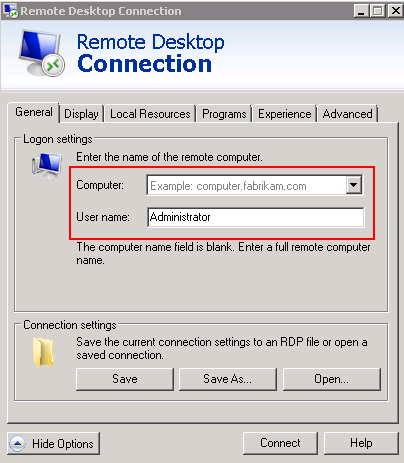
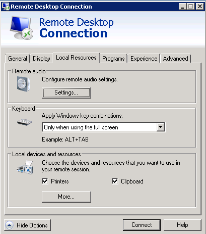
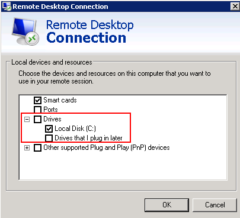

Scenarios
You want to transfer files from a local Windows computer to a Windows ECS through an MSTSC-based remote desktop connection.
Prerequisites
- The target ECS is running.
- The ECS has an EIP bound. For details, see Binding an EIP.
Solution
- On the local Windows computer, click Start. In the Search programs and files text box, enter mstsc.
The Remote Desktop Connection window is displayed.
- Click Options.

- On the General tab, enter the EIP bound to the ECS and username Administrator for logging in to the ECS.

- Click the Local Resources tab and verify that Clipboard is selected in the Local devices and resources pane.

- Click More.
- In the Drives pane, select the local disk where the file to be transferred to the Windows ECS is located.

- Click OK and log in to the Windows ECS.
- Choose Start > Computer.
The local disk is displayed on the Windows ECS.
- Double-click the local disk to access it and copy the file to be transferred to the Windows ECS.